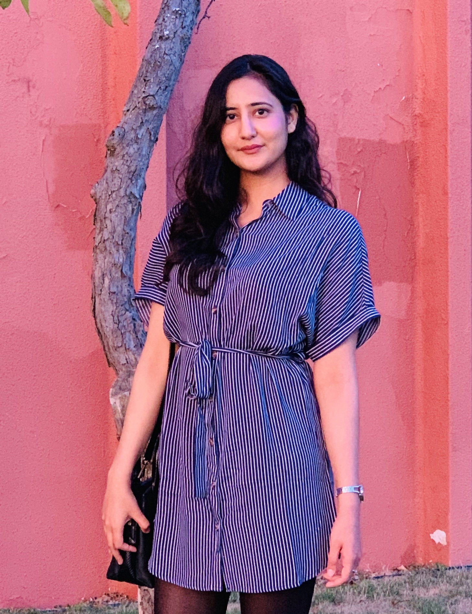
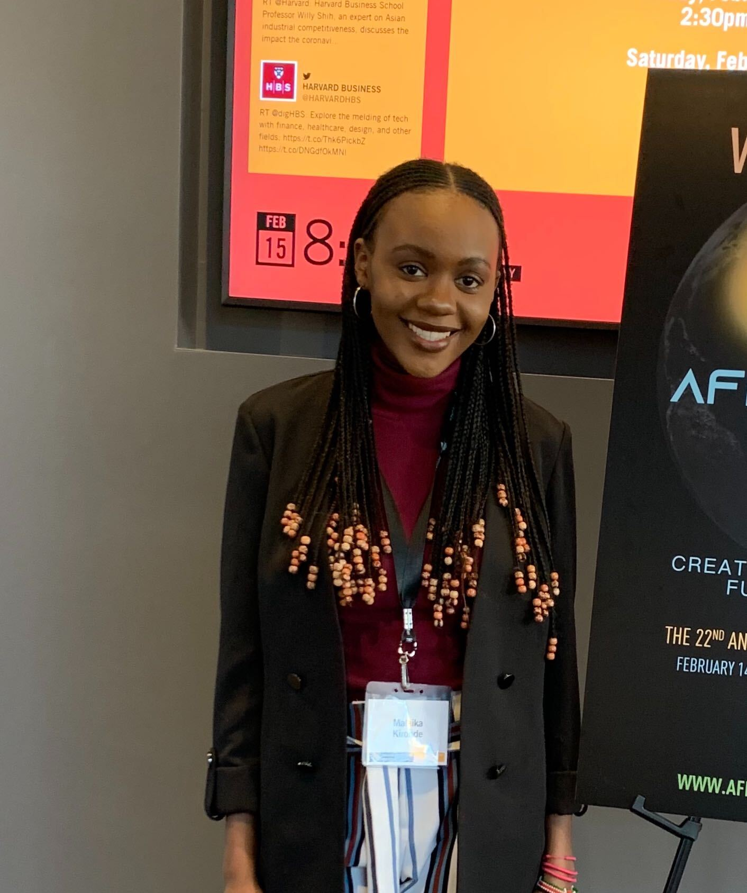
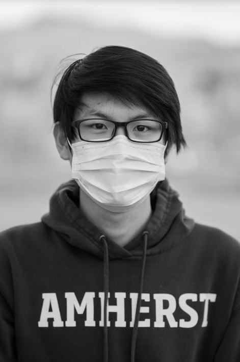
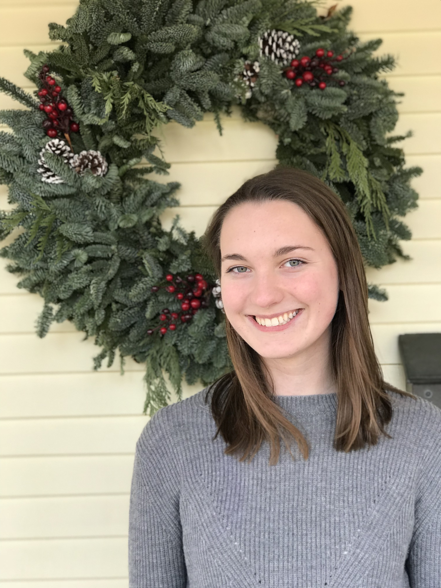

Name: Professor Ivan Contreras
Email: icontreraspalacios@amherst.edu
About: My area of research is mathematical physics. In particular, I am interested in the connections between differential geometry, graph theory and physics. In my free time I enjoy cooking and soccer (both watching and playing).

Name: Zahra Shah
Email: sshah22@amherst.edu
About: I was born in Islamabad, Pakistan. I am a rising junior at Amherst college, majoring in Computer Science and Economics. I enjoy learning new ways in which computer science shapes the world and how it interacts with almost every other disciple. I have always been drawn towards languages, so I try to learn a new one whenever I get the chance. In my free time, I brush up on my german skills or do HIIT.

Name: Malaika Kironde
Email: mkironde@smith.edu
About: As an upcoming computer engineer, I love learning about systems and how they behave. So naturally, I was drawn towards learning about small world networks, and how they influence how we think about the internet, epidemics, and so much more. Outside of stem, I enjoy dancing, playing soccer and reading lots of books, especially African literature.

Name: Leo Xu
Email: sxu23@amherst.edu
About: Hi. My name is Leo. I am from Beijing, China. I am a rising sophomore at Amherst College. I am a potential math major. In my free time, I love solving mathematical puzzles, especially Rubik’s Cube.

Name: Katie Lingen
Email: klingen22@amherst.edu
About: My name is Katie Lingen and I am a rising junior at Amherst College. I am a biology major with an intent to pursue a career in medicine. I joined this research project with an aim to expand my research abilities and to contribute my biological knowledge for the applications of the research. At Amherst, I am a member of the women's track and field team and in my (little) free time, I love to read and bake!